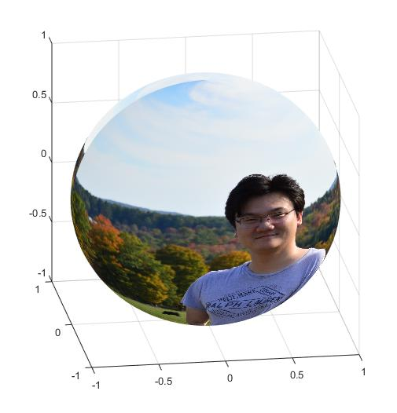

|  | Yu Jiang 姜宇
Alumni of New York Universiy |
Application Support Engineer, The MathWorks, Inc., Natick, MA, Jun 2014
Research Intern, Mitsubishi Electric Research Labs (MERL), Cambridge, MA, Jun 2013 - Aug 2013
Ph.D., Electrical Engineering, New York University, May 2014 (Advisor: Prof. Zhong-Ping Jiang)
M.S., Automation Science and Engineering, South China University of Technology, June 2009 (Advisor: Prof. Jie Huang)
B.S., Mathematics and Applied Mathematics, Sun Yat-sen (Zhong-Shan University), June 2006
Alexander Hessel Award, for the Best Ph.D. Dissertation in Electrical Engineering, ECE Dept at NYU, 2010
Shimemura Young Author Prize, at the 9th Asian Control Conference, Istanbul, Turkey, June 2013
Richard Rosenthal Award, for the outstanding performance on the electrical engineering PhD Qualifying Examination, ECE Dept at NYU, 2010 (Awarded to the Top 1 candidate)
Huawei Scholarship for outstanding students, South China University of Technology, 2008
National First Place, in the Chinese Graduate Mathematical Contest in Modeling, 2007
National First Place, in the Chinese Undergraduate Mathematical Contest in Modeling, 2005
Please feel free to email me to
request reproduction code for a simulation
ask clarification on an issue
discuss any related research topics
inform me any bugstyposbroken links
invite me as a reviewer
[P-1] Yebin Wang, Yu Jiang, and Scott Bortoff, “Motion Control System for Performing Different Tasks,” A patent filed by Mitsubishi Electric Research Labs in Oct. 2013.
[BC-1] Yu Jiang and Zhong-Ping Jiang, “Robust adaptive dynamic programming,” in Reinforcement Learning and Approximate Dynamic Programming for Feedback Control, F. L. Lewis and D. Liu, Eds, John Wiley and Sons, 2013.
[J-15] Tao Bian, Yu Jiang, and Zhong-Ping Jiang, “Adaptive dynamic programming for stochastic systems with state and control dependent noise,” IEEE Transactions on Automatic Control, submitted, April 2014.
[J-14] Yu Jiang and Zhong-Ping Jiang, “Global adaptive dynamic programming for continuous-time nonlinear systems,” IEEE Transactions on Automatic Control, accepted as Full Paper
[arXiv]
[J-13] Yu Jiang, Yebin Wang, Scott Bortoff, and Zhong-Ping Jiang, “Optimal co-Design of nonlinear control systems based on a modified policy iteration method,” IEEE Transactions on Neural Networks and Learning Systems, vol. 26, no. 2, pp. 409–414, Jan 2015
[J-12] Yu Jiang, Yebin Wang, Scott Bortoff, and Zhong-Ping Jiang, “An Iterative Approach to the Optimal Co-Design of Linear Control System,” International Journal of Control, submitted, Nov 2014
[J-11] Tao Bian, Yu Jiang, and Zhong-Ping Jiang, “Decentralized and adaptive optimal control of large-scale systems with application to power systems,” IEEE Transactions on Industrial Electronics, to appear
[J-10] Yu Jiang and Zhong-Ping Jiang, “A robust adaptive dynamic programming principle for sensorimotor control with signal-dependent noise,” Journal of Systems Science and Complexity, vol. 28, pp. 261-288, Feb 2015
[J-9] Yu Jiang and Zhong-Ping Jiang, “Adaptive dynamic programming as a theory of sensorimotor Control,” Biological Cybernetics, vol. 108, no. 4, pp. 459–473, 2014
[Link]
[J-8] Tao Bian, Yu Jiang, and Zhong-Ping Jiang, “Adaptive dynamic programming and optimal control of nonlinear nonaffine systems,” Automatica,vol. 50, no. 10, 2624–2632, Oct 2014.
[J-7] Yu Jiang and Zhong-Ping Jiang, “Robust adaptive dynamic programming and feedback stabilization of nonlinear systems,” IEEE Transactions on Neural Networks and Learning Systems, vol. 25, no. 5, pp. 882-893, 2014
[Bibtex]
[Link]
[J-6] Zhong-Ping Jiang and Yu Jiang, “Robust adaptive dynamic programming for linear and nonlinear systems: An overview,” European Journal of Control, vol. 19, no. 5, pp. 417-425, 2013
[Link]
[J-5] Yu Jiang and Zhong-Ping Jiang, “Robust adaptive dynamic programming with an application to power systems,” IEEE Transactions on Neural Networks and Learning Systems, vol. 24, no.7, pp. 1150- 1156, 2013
[Link]
[Movie]
[J-4] Yu Jiang and Zhong-Ping Jiang, “Robust adaptive dynamic programming for large-scale systems with an application to multimachine power systems,” IEEE Transactions on Circuits and Systems, Part II vol. 59, no. 10, pp. 693-697, 2012.
[Bibtex]
[Link]
[Extended version]
[Matlab code]
[J-3] Ning Qian, Yu Jiang, Zhong-Ping Jiang, and Pietro Mazzoni, “Movement duration, Fitts's law, and an infinite-horizon optimal feedback control model for biological motor systems,” Neural Computation, vol. 25, no. 3, pp. 697-724, 2012
[Link]
[PDF]
[J-2] Yu Jiang and Zhong-Ping Jiang, “Computational adaptive optimal control for continuous-time linear systems with completely unknown system dynamics,” Automatica, vol. 48, no. 10, pp. 2699-2704, Oct. 2012.
[Bibtex]
[Link]
[Preprint]
[MATLAB_code]
[Matlab_code_2]
[J-1] Yu Jiang and Zhong-Ping Jiang, “Approximate dynamic programming for optimal stationary control with control-dependent noise,”
IEEE Transactions on Neural Networks, vol. 22, no.12, 2392-2398, 2011
[Link]
[C-16] Yu Jiang and Zhong-Ping Jiang, “Global adaptive dynamic programming and global optimal control for a class of nonlinear systems,” in proceedings of the 2014 IFAC World Congress, vol. 19, no. 1, pp. 9756–9761, Cape Town, South Africa, August 2014
[C-15] Weinan Gao, Yu Jiang, Zhong-Ping Jiang, and Tianyou Chai, “Adaptive and optimal output feedback
control of linear systems: an adaptive dynamic programming approach,” In proceedings of the 11th World Congress on Intelligent Control and Automation, Shenyang, China, pp. 2085-2090, June 2014.
[C-14] Yu Jiang and Zhong-Ping Jiang, “Robust adaptive dynamic programming for sensorimotor control with signal-dependent noise,” IEEE Signal Processing in Medicine and Biology Symposium, Brooklyn, NY, 2013
[C-13] Zhong-Ping Jiang and Yu Jiang, “Robust Adaptive Dynamic Programming: Recent results and applications,” In Proceedings of the Chinese Control Conference, Xi'An, China, pp. 968-973, 2013
[C-12] Yu Jiang and Zhong-Ping Jiang, “Robust adaptive dynamic programming for optimal nonlinear control,” In Proceedings of the Asian Control Conference, Istanbul, Turkey, June 2013 (Shimemura Young Author Award)
[C-11] Zhong-Ping Jiang and Yu Jiang, “A new approach to robust and optimal nonlinear control design,”
IASTED Asian Conference on Modelling, Identification and Control, Phuket, Thailand, 2013
[C-10] Yu Jiang and Zhong-Ping Jiang, “Adaptive dynamic programming as a theory of motor control,” IEEE Signal Processing in Medicine and Biology Symposium, New York, NY, 2012
[C-9] Yu Jiang and Zhong-Ping Jiang, “Robust adaptive dynamic programming for nonlinear control design,” In Proceedings of the IEEE Conference on Decision and Control, Maui, Hawaii, USA, pp. 1896-1901, Dec. 2012
[C-8] Yu Jiang and Zhong-Ping Jiang, “Computational adaptive optimal control with an application to blood glucose regulation in type 1 diabetics,” in Proceedings of the Chinese Control Conference, Hefei, China, pp. 2938-2943, July, 2012
[C-7] Yu Jiang and Zhong-Ping Jiang, “Robust adaptive dynamic programming: An overview of recent results,” International Symposium on Mathematical Theory of Networks and Systems, Melbourne, Australia, 2012
[C-6] Yu Jiang and Zhong-Ping Jiang, “Robust approximate dynamic programming and global stabilization with nonlinear dynamic uncertainties,” In Proceedings of The Joint IEEE Conference on Decision and Control and European Control Conference, Orlando, FL, USA, pp. 115-120, 2011
[C-5] Yu Jiang, Srinivasa Chemudupati, Jan Morup Jorgensen, Zhong-Ping Jiang, and Charles S. Peskin, “Optimal control mechanism involving the human kidney,” In Proceedings of The Joint IEEE Conference on Decision and Control and European Control Conference, Orlando, FL, USA, pp. 3688-3693, 2011
[C-4] Yu Jiang and Zhong-Ping Jiang, “Approximate dynamic programming for stochastic systems with additive and multiplicative noise,”
IEEE Multi-Conference on Systems and Control, pp. 185-190, Denver, CO, 2011
[C-3] Yu Jiang, Zhong-Ping Jiang, and Ning Qian, “Optimal control mechanisms in human arm reaching movements,” In Proceedings of Chinese Control Conference, pp. 1377-1382, Yantai, China, 2011
[C-2] Yu Jiang and Zhong-Ping Jiang, “Approximate dynamic programming for output feedback control,”
Chinese Control Conference, pp. 5815-5820, Beijing, China, 2010
[C-1] Yu Jiang and Jie Huang, “Output regulation for a class of weakly minimum phase systems and its application to a nonlinear benchmark system,” In Proceedings of American Control Conference, pp. 5321-5326, St. Louis, USA, 2009
Yu Jiang, Robust Adaptive Dynamic Programming for Continuous-Time Linear and Nonlinear Systems, Department of Electrical and Computer Engineering, New York University, 2014
[Download]